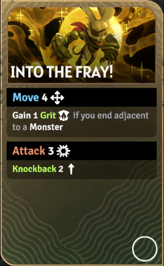
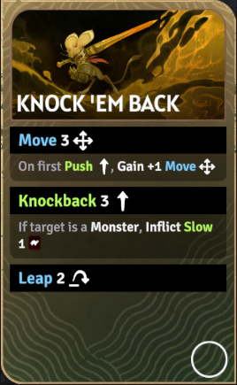
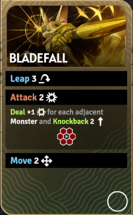
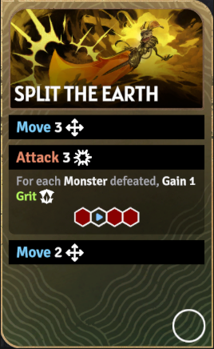
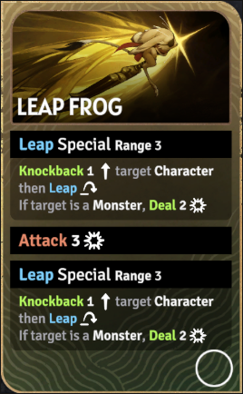
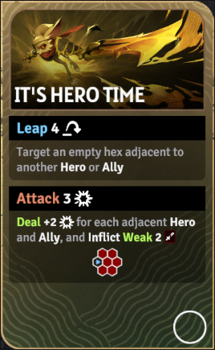
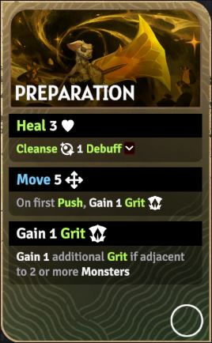
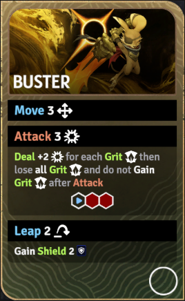
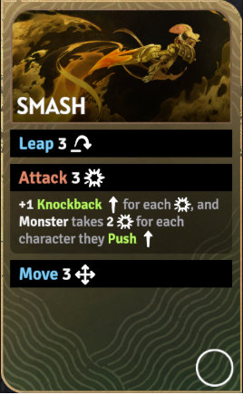
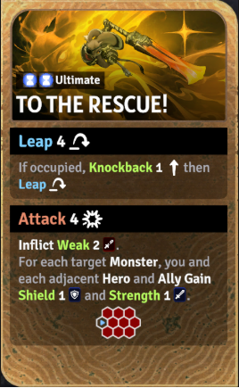

先锋（Vanguard）
定位：前排、先手开团、击退联动。他偏主动开战，通过跳跃进场、击退扰阵和坚劲积累来为全队打开空间。
坚劲跳跃击退开团

被动技能
战意
先锋在攻击时会叠加坚劲。坚劲同时提供更强的换血资本和后续爆发转换能力，因此他希望主动开团，而不是被动等怪靠近。
专属机制
先锋比狂战士更主动。他偏向“跳跃进场 - 击退打乱 - 坚劲转伤害”的节奏型前排，尤其适合帮队友打开站位。需要关注自身在战场中的位置，并判断高机动性的每次落地分别要完成哪些目标。
技能清单与详细描述

技能卡牌图冲入战阵（Into the Fray!）
技能消耗：无
移动 4。
若结束时贴怪，则获得 1 坚劲。
攻击 3。
附带击退 2。

技能卡牌图狠狠打回去（Knock 'em Back）
技能消耗：无
移动 3。
第一次推移后获得 +1 移动。
击退 3。
若目标是怪物，则附加减益 1。
再跳跃 2。

技能卡牌图刃落（Bladefall）
技能消耗：无
跳跃 3。
攻击 2（所有相邻格范围效果）。
按相邻怪物数量追加伤害。
附带击退 2。
最后移动 2。

技能卡牌图裂地猛击（Split the Earth）
技能消耗：无
移动 3。
攻击 3（直线 2 格外加反向单格的特殊范围效果）。
每击败一个怪物获得 1 坚劲。
再移动 2。

技能卡牌图跃蛙突进（Leap Frog）
技能消耗：无
特殊跳跃（射程 3）。
先对目标角色击退 1，再跳跃到位。
若目标是怪物，再造成 2 点伤害。
然后攻击 3。
接着重复一次特殊跳跃。

技能卡牌图英雄时刻（It's Hero Time）
技能消耗：无
跳跃 4 到一个与另一位英雄 / 友军相邻的空格。
攻击 3（一条平行 2 格直线范围效果）。
按相邻英雄 / 友军数量额外 +2 伤害。
附加虚弱 2。

技能卡牌图整装待发（Preparation）
技能消耗：无
治疗 3。
净化 1 个减益。
移动 5。
第一次推移后获得 1 坚劲。
随后再获得 1 坚劲。
若相邻 2 个以上怪物，则再额外获得 1 坚劲。

技能卡牌图破阵者（Buster）
技能消耗：无
移动 3。
攻击 3（直线 2 格范围效果）。
按每层坚劲额外 +2 伤害。
然后失去全部坚劲，且本次攻击后不再从攻击获得坚劲。
跳跃 2 并获得护盾 2。

技能卡牌图猛砸（Smash）
技能消耗：无
跳跃 3。
攻击 3。
每造成 1 点伤害就额外 +1 击退。
怪物每被推移到一个角色，会额外受到 2 点伤害。
最后移动 3。

技能卡牌图终极技·援护救场（To the Rescue!）
技能消耗：无
跳跃 4。
若目标格被占据，则先击退 1 再跳跃。
接着攻击 4 / 5 / 6（一条平行 3 格直线范围效果）。
附加虚弱 2 / 3 / 4。
每命中一个怪物，你和每个相邻英雄 / 友军获得护盾 1 与力量 1。
来源：?a href="https://sunderfolk.siteswiki.org/heroes/vanguard">先锋页面（Vanguard）。
推荐技能组
开团扰阵方向
推荐理由：先贴怪拿坚劲并开第一轮击退，再用狠狠打回去补位移和减速，最后用刃落在怪群贴身时把范围收益最大化。
坚劲爆发方向
推荐理由：先通过整装待发补状态并累积坚劲，再把坚劲全部转给破阵者，最后用猛砸把敌人再次推出关键位置，适合节奏推进局。
突进支援方向
推荐理由：这一组适合主动开团。跃蛙突进先破阵切入，裂地猛击补正面范围压制，再用整装待发延续站场与坚劲循环。